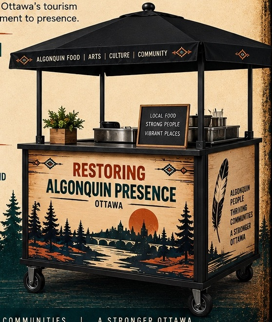

A visible, permanent Algonquin presence in Canada's capital. Ottawa sits on the unceded and unsurrendered territory of the Algonquin Anishinabe Nation. Restoring Algonquin Presence is about making that truth visible in everyday economic life: Algonquin people working, selling, creating and participating directly in Ottawa's visitor economy.

Ottawa's tourism economy is large and concentrated around nationally recognized places. Yet visitors still have few dependable opportunities to find Algonquin-owned businesses, buy directly from Algonquin people, or encounter contemporary Algonquin enterprise as part of the capital experience.
Build a distinct, authentic visitor experience rooted in the people and territory of the capital.
Create affordable access to high-visibility locations for Algonquin entrepreneurs, makers and cultural practitioners.
Generate direct sales, paid work, customer relationships and evidence that helps businesses grow.
Move beyond symbolic recognition toward a visitor economy that visibly includes Algonquin people.
The first season is designed as a disciplined three-cart pilot at one strong tourism hub or two complementary sites. Each cart shares a common public identity while serving a different purpose.
Chelsea's Kitchen provides a dependable operating presence with bannock-based meals and drinks, creating daily activity, visitor appeal and earned revenue.
Rotating space for Algonquin art, craft, apparel and other products—giving entrepreneurs a lower-barrier way to test demand and reach tourism customers.
A flexible platform for guest food concepts, demonstrations, conversations, cultural programming, emerging products and special events.
The carts are not meant to lock every participant into one business model. They are a shared platform with changeable entrepreneur panels, adaptable displays, common visitor information and modules appropriate to food, retail or programming.
One Restoring Algonquin Presence identity makes the network easy for visitors, hotels and tourism partners to find and recommend.
Participating entrepreneurs keep control of their businesses, products, pricing, customer relationships and intellectual property.
The residency model is built for entrepreneurs who need access to customers without taking on the fixed cost of a permanent downtown location. The first season can combine sponsored, free and sliding-scale placements.
One to three operating days for a new product or early-stage business.
One to four weeks for entrepreneurs ready for concentrated selling, promotion and customer learning.
Scheduled food, demonstration or cultural experiences with clear consent, safety, authority and compensation requirements.
Identify fit and support needs through a simple expression of interest or supported referral.
Review product, pricing, compliance, availability and site fit.
Confirm dates, fees, equipment, promotion, data, safety and shared-space expectations in plain language.
Operate, sell, gather useful evidence and finish with a debrief and next-step recommendation.
Restoring Algonquin Presence is not a souvenir stop or a symbolic reconciliation installation. It is a living marketplace: Algonquin people operating businesses, selling work, sharing approved experiences and participating directly in Ottawa's visitor economy.
A clear Algonquin-led marketplace identity explains what is operating that day.
A reliable food anchor alongside changing products, demonstrations and guest concepts.
Straightforward transactions that create direct economic benefit for participating Algonquin businesses.
A changing residency calendar gives visitors and Ottawa residents a reason to come back.
Success means visible space, paid work, sales and repeat participation—not acknowledgement alone.
Activity must create measurable value for participating Algonquin businesses and contributors.
No entrepreneur is required to perform culture in order to sell a product. Cultural participation is voluntary and appropriately compensated.
Selection, fees, sponsorships, conflicts, consent and results are documented and transparent.
The project is deliberately staged. Site access, technical requirements, governance and financing come before major capital commitments.
The pilot will track visitor behaviour and entrepreneur outcomes so expansion is based on evidence rather than publicity alone.
The project needs more than a cart. It needs strong locations, affordable access, tourism distribution, entrepreneur referrals, technical expertise and partners willing to invest in measurable outcomes.
Offer a recurring, high-visibility location with workable permissions, utilities, storage, accessibility and promotion.
Help visitors discover the network through hotels, attractions, conferences, tour itineraries, events and destination marketing.
Support cart capital, sponsored residencies, paid Algonquin guidance, programming, accessibility, marketing and evaluation.
Restoring Algonquin Presence is building a practical platform for Algonquin entrepreneurs to be visible in the heart of Ottawa's visitor economy—and for visitors to encounter a capital city where Algonquin presence is lived, not only acknowledged.